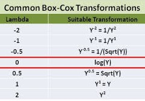

9.1 Modelos lineales
Un solo factor - experimento DCA: dataset PlantGrowth
?PlantGrowth
plant_g <- PlantGrowth # simplificamos el nombre del dataset- Exploración
str(plant_g) # tipo de variablessummary(plant_g) # exploración numérica# exploracion numerica por tratamiento
plant_g %>%
group_by(group) %>%
summarise(
count = n(),
mean = mean(weight, na.rm = TRUE),
sd = sd(weight, na.rm = TRUE)
)# Exploración gŕafica
plant_g %>%
ggplot(aes(x=group, y=weight)) +
geom_boxplot(width=0.2)+
geom_jitter(alpha=0.2, width=0.2)+
theme_light()Ajuste del modelo lineal
\[y_{ij} = \mu + \alpha_i + e_{ij}; \:\:i = 1,..., k; \:j = 1,..., n\] \[N \sim (\sigma^2, 0)\]
mod1 <- lm(weight ~ group, data = plant_g) - Diagnósticos
Las varianzas (entre niveles del factor) son homogéneas?
# homocedasticidad
plot(mod1, which = 1)
car::leveneTest(mod1)Los residuos se distribuyen normales?
plot(mod1, which = 2)
shapiro.test(mod1$residuals)
# my_data$fit = mod1$fitted.values
# my_data$res = my_data$fit - my_data$weight
# mean(my_data$res)
# names(mod1)hist(m_fix$residuals)anova(mod1)# caso balanceado
# car::Anova(mod1)# caso desbalanceadoTest de comparación múltiple (de medias estimadas de los tratamientos)
library(emmeans)
em <- emmeans(mod1, ~ group, type="response")
em
res = CLD(em, Letters = letters, reverse = FALSE, alpha = .05)
resDos factores:
?ToothGrowth
tg <- ToothGrowth- Exploración
str(tg) # tipo de variablestg <- tg %>% mutate_at(vars(dose), funs(as.factor)) summary(tg) # exploración numérica# exploracion numerica por tratamiento
tg %>%
group_by(supp, dose) %>%
summarise(
count = n(),
mean = mean(len, na.rm = TRUE),
sd = sd(len, na.rm = TRUE)
)# Exploración gŕafica
tg %>%
ggplot(aes(x = factor(dose), y = len, colour = supp)) +
geom_boxplot() +
theme_bw()mod2 <- lm(len ~ supp * dose, data = tg) # equivale a supp + dose + supp:dose
anova(mod2)- comparaciones múltiples (un factor dentro del otro)
# emmip(mod2, supp~ dose)
emm_tg <- emmeans(mod2, pairwise ~ supp | dose)
CLD(emm_tg, Letters = letters, reverse = FALSE, alpha = .05)
emm_tg2 <- emmeans(mod2, pairwise ~ dose|supp)
CLD(emm_tg2, Letters = letters, reverse = FALSE, alpha = .05)Transformación potencia óptima de boxcox
Esta transformación solo tiene un parámetro: lambda, graficado en el eje x. Si el valor de lambda es igual a cero, se lleva a cabo la transforma con el logaritmo natural, y si dicho valor es distinto a cero la transformación es potencial.



Si el parámetro lambda es igual a uno, no hace falta transformar la variable respuesta. Si el intervalo (lineas punteadas verticales) no contiene a 0 ni a 1, hay que transformar la variable elevando a la potencia del valor de lamba incluido en el intervalo
La utilización de la transformación Box-Cox requiere que todos los valores de la serie de entrada sean positivos y distintos a cero. Por ello es adicionada una constante a la variable original (0.5, por ej.)
En el caso de la derecha, el modelo resultaria:
lm((y+0.5)^0.2 ~ trt + bk, ...)